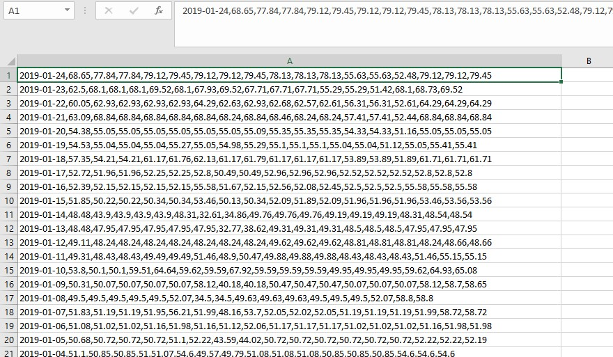
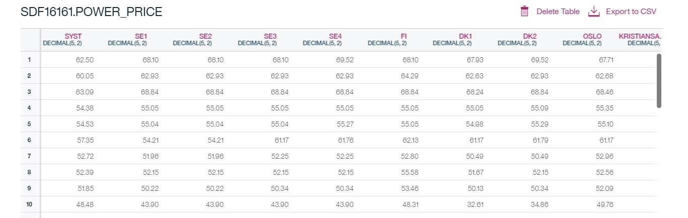
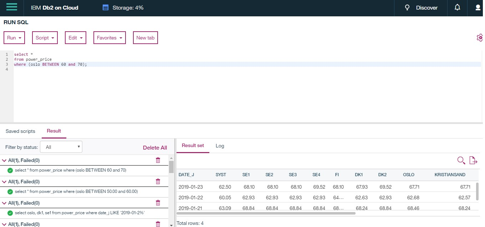

Using SQL to analyse the power market
SQL is a powerful tool in data analysis and storage. SQL can be used directly with its many statements and clauses. Db2 on cloud by IBM is used in this article to showcase how data can be stored and analysed in SQL from an Excel source.
Download data
A lot of data is stored online or easily available as xlsx or csv-files. In this article, data for power prices in the Nordics have been downloaded from Nordpool, converted to csv from excel and subsequently to SQL. When you use Db2 on cloud it is important that the data is in a csv format (comma separated), this is not necessarily the case for other clouds or systems.
Creating the table
Creating the table on the cloud is done with the code below. When the data is loaded on to the table in the database it must be in a csv format. On Db2 cloud you do not necessarily have to create the table manually, this could be done automatically when you load the data by giving column-names to the header.
CREATE TABLE power_price (
date_j date,
syst decimal(5,2),
se1 decimal(5,2),
se2 decimal(5,2),
se3 decimal(5,2),
se4 decimal(5,2),
fi decimal(5,2),
dk1 decimal(5,2),
dk2 decimal(5,2),
oslo decimal(5,2),
kristiansand decimal(5,2),
bergen decimal(5,2),
molde decimal(5,2),
trondheim decimal(5,2),
tromsø decimal(5,2),
ee decimal(5,2),
lv decimal(5,2),
lt decimal(5,2)
);
The table
When you load the data into the table you have created, it is important that the values of the data are in the right order and datatype (decimal, varchar, date, char, etc.).
Various SELECT statements
To analyse the table that we have created in SQL in a simple manner, we can run various select statements with different clauses. Here are some basic examples of select statements:
SELECT *
FROM power_price
WHERE date_j='2019-01-21'; -- Shocases all prices from the table when the date is 2019-01-21.
SELECT oslo, dk1, se1 FROM power_price
WHERE date_j LIKE '2019-01-2%'; -- Showcases the prices when the date is 2019-01-2(0,1,2,3,4,5,6,7,8,9)
SELECT AVG(oslo)
FROM power_price; -- this gives the average of the power price in oslo (the average is 53.5876).
select date_j, oslo from power_price
order by oslo limit 10; -- orders the data from the oslo column but limited by 10.
select date_j, oslo from power_price
order by oslo desc nulls last limit 10; -- descending order limited by 10.
The following picture shows the code that displays a table of data from every spot area when the condition; Oslo spot price between 60 and 70 EUR/MWh, is met:
What is Y when X is ...?
Sometimes we want specific information on something and use that to find relevant information. For instance, we want to sort the power prices below 40 EUR/MWh in the spot area DK1 and find which dates corresponds to this. Simultaneously, we want to find the corresponding price in DK2. The code to do that is the following:
SELECT date_j, dk1, dk2
FROM power_price
WHERE (dk1) < '40'
ORDER BY dk1 DESC;Having one table only is obviously not enough for a sufficient analysis. The power price data must be analysed in relation to other data like meteorological data, prices for fossil fuels, consumption, (i.a.). The more data you go through; the more information you will get, which will make it easier to comprehend the power market.
Join tables
Consider you have a table like the one we have shown already and a table displaying coal prices. By having a common key (primary and secondary key) you can join the tables together to find the information you want to collect. Both an inner join and an outer join would be sufficient. Take a look at the following example:
select oslo, coal_price
from power_price
join table2
on power_price.date_j = table2.date_j
where date_j like '2019-01-1%';The example above is an inner join. The resulting table would dislpay the coal prices and the price of the oslo spot from January the 10th to 19th. Maybe there would be a correlation?
This was a short introduction of using SQL to analyze the power market. The more you play around with databases that are relevant to the power market, the more you will learn about it. Python is also a very strong tool to use to analyze the power market which will be covered soon here on The Nordic Grid.
Sources and credits
Data from nordpool. Db2 on cloud used to store and analyse data.